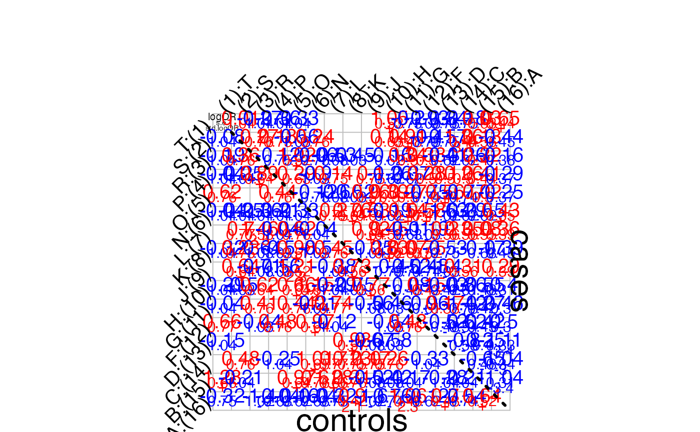

Simulate data from nested partially-latent class model (npLCM) family
Source:R/simulate-nplcm.R
simulate_nplcm.RdSimulate data from nested partially-latent class model (npLCM) family
Arguments
- set_parameter
True model parameters in an npLCM specification:
cause_lista vector of disease class names among cases (since the causes could be multi-agent (e.g., multiple pathogens may cause an individual case's pneumonia), so its length could be longer than the total number of unique causative agents)etiologya vector of proportions that sum to 100 percentpathogen_BrSa vector of putative causative agents' names measured in bronze-standard (BrS) data. This function simulates only one slice defined by specimentestpathogenpathogen_SSa vector of pathogen names measured in silver-standard (SS) data.meas_nma list of specimentest names e.g.,list(MBS = c("NPPCR"),MSS="BCX")for nasopharyngeal (NP) specimen tested by polymerase chain reaction (PCR) -NPPCRand blood (B) tested by culture (Cx) -BCXLambdacontrols' subclass weights \(\nu_1, \nu_2, \ldots, \nu_K\) a vector ofKprobabilities that sum to 1.Etaa matrix of dimensionlength(cause_list)byK; each row represents a disease class (among cases); the values in that row are subclass weights \(\eta_1, \eta_2, \ldots, \eta_K\) for that disease class, so needs to sum to one. In Wu et al. 2016 (JRSS-C), the subclass weights are the same across disease classes across rows. But when simulating data, one can specify rows with distinct subclass weights - it is a matter whether we can recover these parameters (possible when some cases' true disease classes are observed)PsiBS/PsiSSFalse positive rates for Bronze-Standard data and for Silver-Standard data. For example, the rows ofPsiBScorrespond to the dimension of the particular slice of BrS measures, e.g.,10for 10 causative agents measured by NPPCR; the columns correspond toKsubclasses; generically, the dimension isJbyKPsiSSis supposed to be a vector of all zeros (perfect specificity in silver-standard measures).ThetaBS/ThetaSSTrue positive rates \(\Theta\) for Bronze-Standard data and for Silver-Standard data. Dimension isJbyK(can containNAif the total number of causative agents measured by BrS or SS exceeds the measured causative agents in SS. For example, in PERCH study, nasopharyngeal polymerase chain reaction (NPPCR; bronze-standard) may target 30 distinct pathogens, but blood culture (BCX; silver-standard) may only target a subset of the 30, so we have to specifyNAinThetaSSfor those pathogens not targeted by BCX).Nuthe number of control subjectsNdthe number of case subjects
Value
A list of diagnostic test measurements, true latent statues:
data_nplcma list of structured data (seenplcm()for description).templatea matrix: rows for causes (may comprise a single or multiple causative agents), columns for measurements; generated as a lookup table to match disease-class specific parameters (true and false positive rates)latent_catinteger values to indicate the latent category. The integer code corresponds to the order specified inset_parameter$etiology. Controls are coded aslength(set_parameter$etiology)+1.)
See also
simulate_latent for simulating discrete latent status, given which simulate_brs simulates bronze-standard data.
Examples
K.true <- 2 # no. of latent subclasses in actual simulation.
# If eta = c(1,0), effectively, it is K.true=1.
J <- 21 # no. of pathogens.
N <- 600 # no. of cases/controls.
eta <- c(1,0)
# if it is c(1,0),then it is conditional independence model, and
# only the first column of parameters in PsiBS, ThetaBS matter!
seed_start <- 20150202
print(eta)
#> [1] 1 0
# set fixed simulation sequence:
set.seed(seed_start)
ThetaBS_withNA <- c(.75,rep(c(.75,.75,.75,NA),5))
PsiBS_withNA <- c(.15,rep(c(.05,.05,.05,NA),5))
ThetaSS_withNA <- c(NA,rep(c(0.15,NA,0.15,0.15),5))
PsiSS_withNA <- c(NA,rep(c(0,NA,0,0),5))
set_parameter <- list(
cause_list = c(LETTERS[1:J]),
etiology = c(c(0.36,0.1,0.1,0.1,0.1,0.05,0.05,0.05,
0.05,0.01,0.01,0.01,0.01),rep(0.00,8)),
#same length as cause_list.
pathogen_BrS = LETTERS[1:J][!is.na(ThetaBS_withNA)],
pathogen_SS = LETTERS[1:J][!is.na(ThetaSS_withNA)],
meas_nm = list(MBS = c("MBS1"),MSS="MSS1"),
Lambda = eta, #ctrl mix
Eta = t(replicate(J,eta)), #case mix, row number equal to Jcause.
PsiBS = cbind(PsiBS_withNA[!is.na(PsiBS_withNA)],
rep(0,sum(!is.na(PsiBS_withNA)))),
ThetaBS = cbind(ThetaBS_withNA[!is.na(ThetaBS_withNA)],
rep(0,sum(!is.na(ThetaBS_withNA)))),
PsiSS = PsiSS_withNA[!is.na(PsiSS_withNA)],
ThetaSS = ThetaSS_withNA[!is.na(ThetaSS_withNA)],
Nu = N, # control size.
Nd = N # case size.
)
simu_out <- simulate_nplcm(set_parameter)
data_nplcm <- simu_out$data_nplcm
pathogen_display <- rev(set_parameter$pathogen_BrS)
plot_logORmat(data_nplcm,pathogen_display)
#> == Visualizing pairwise log odds ratios for bronze-standard data set: 1 : MBS1 . ==

# more examples are provided in the vignette, including settings with
# covariates.